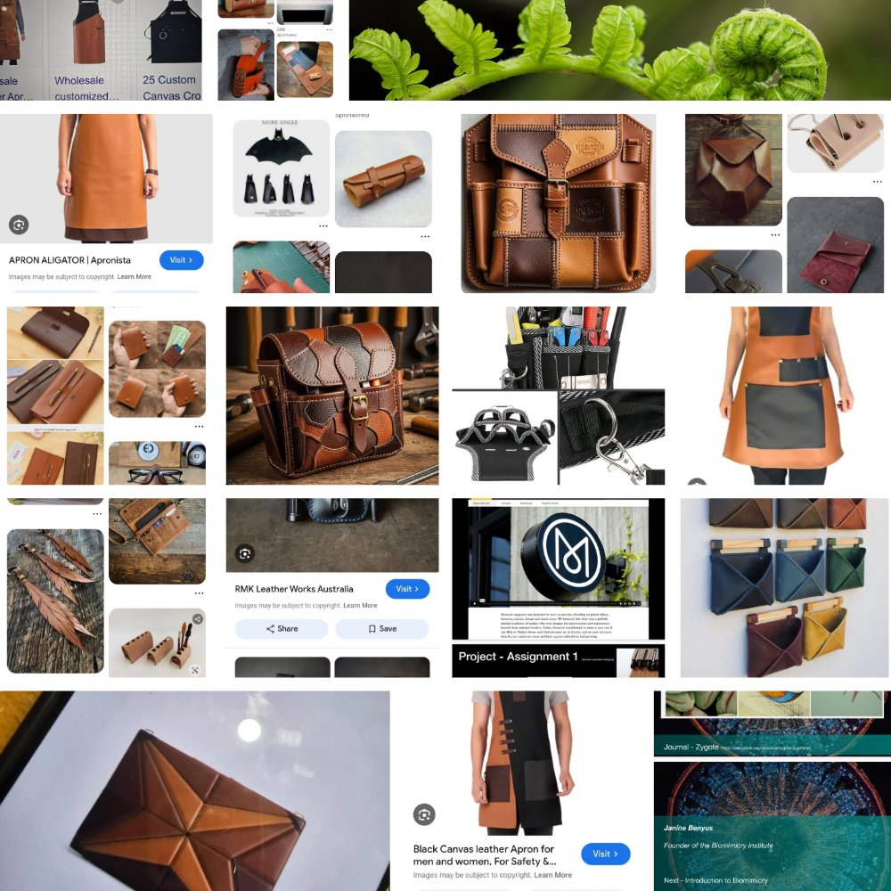
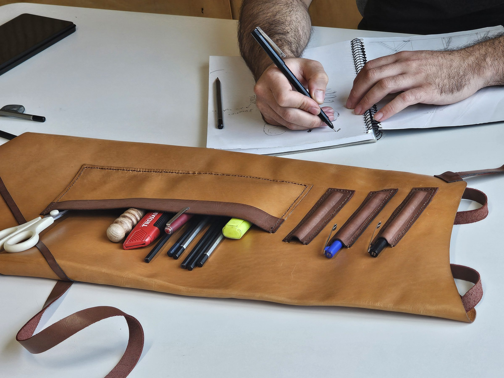
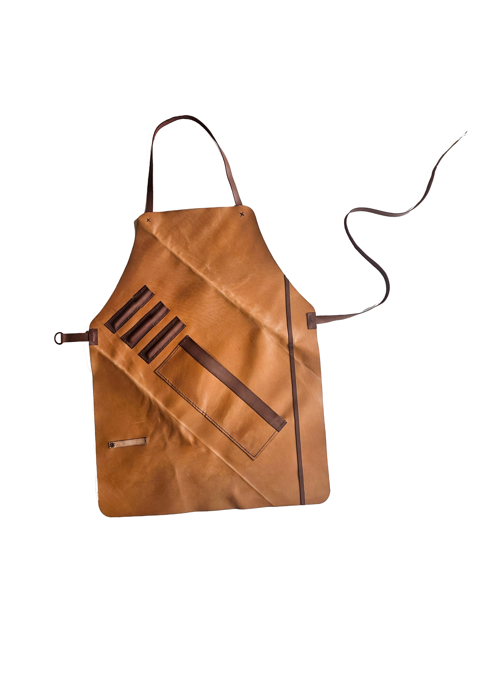
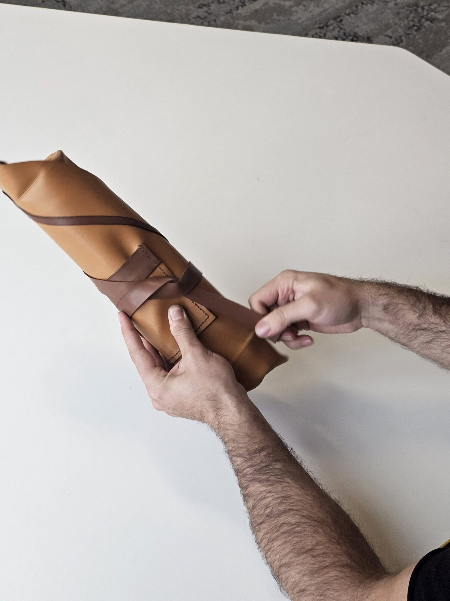
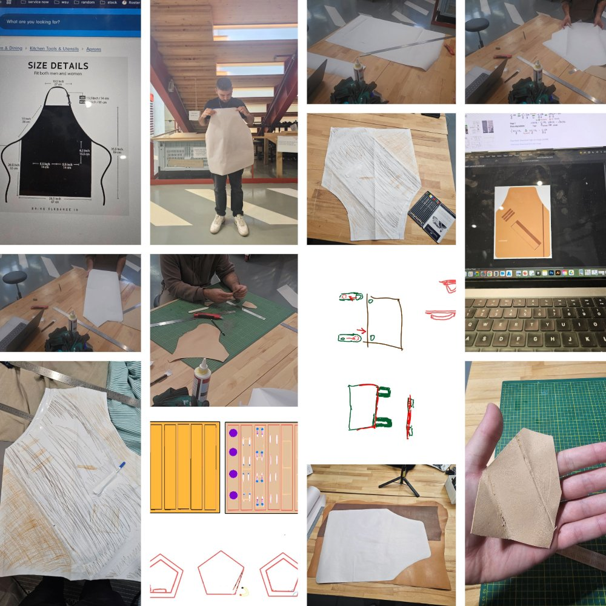
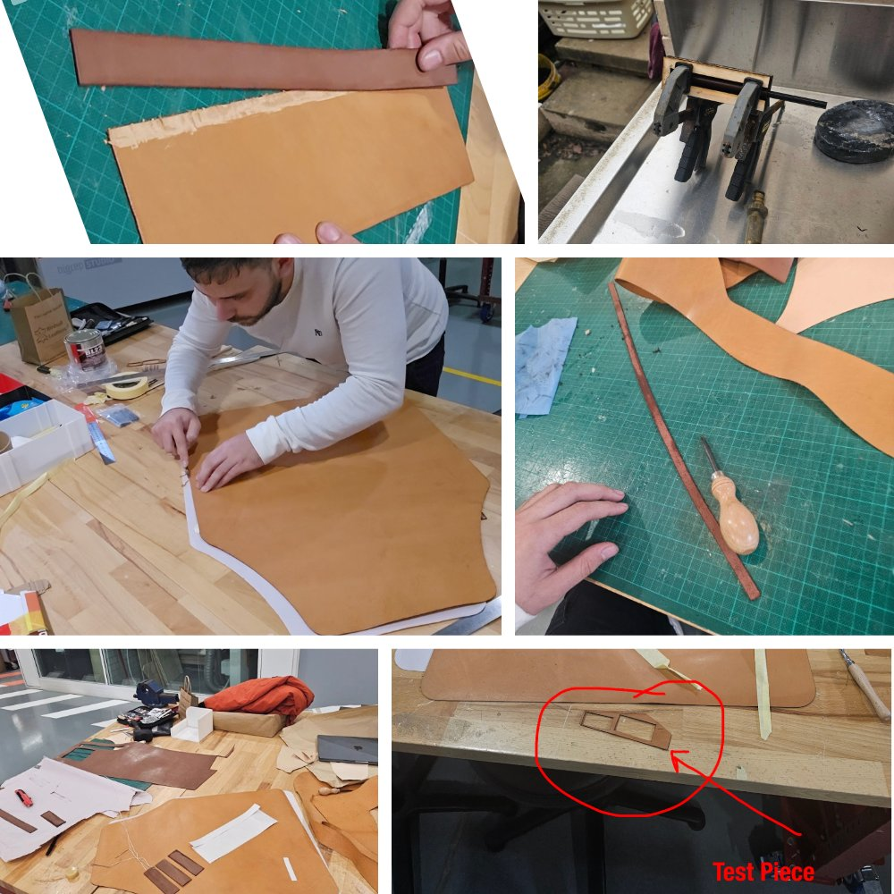
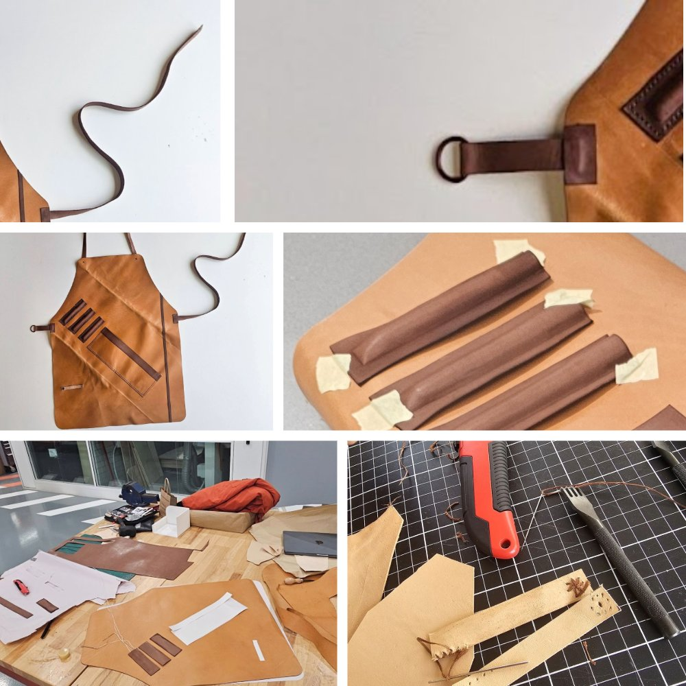

Ideation
I looked at how things fold, roll and unfurl, and used that to shape how the apron opens and closes.

Visual research → folding logic, modular systems, and behavioural cues.
A leather tool apron that rolls up into its own pouch, made for creatives who work on the move.



How it came together, from the first layouts to material tests and the final build.
I looked at how things fold, roll and unfurl, and used that to shape how the apron opens and closes.

Visual research → folding logic, modular systems, and behavioural cues.
Paper prototypes first, to get the pattern, scale and pocket layout right before cutting any leather.

Paper testing → proportion, spacing, and functional layout.
Testing leather thickness, stiffness and wet-moulding to see what holds its shape, lasts, and keeps a clean edge.

Material testing → understanding constraints, response, and tolerance.
Built by hand, with a focus on clean stitching, solid strap fixings and details that hold up to daily use.

Assembly → precision, durability, and finish.
Rolo’no is made for working on the move. Laid flat, it’s a work surface for your tools. One roll and it’s a compact pouch. No rigid frame, nothing extra.
Tough, simple and quick to use, and it looks good doing it.